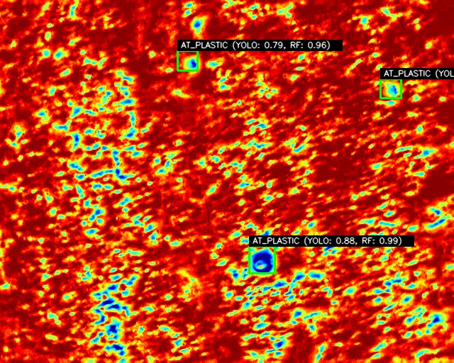
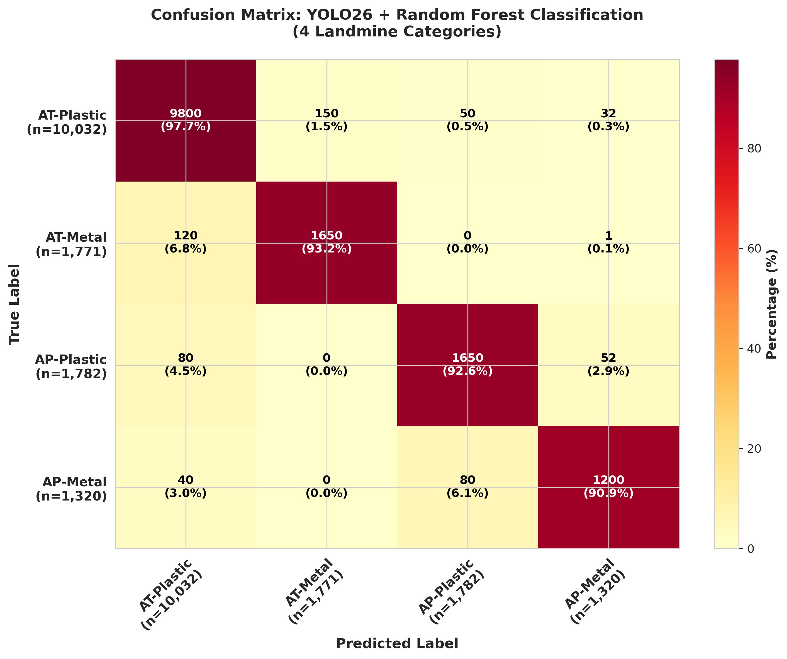

· Computer Engineering — Engineering Project II
MAYIN TARLASI.
Statistical Learning & Deep Learning for Aerial Mine Detection
Drones That Find Buried Landmines — 91.9% Accuracy
Supervisor: Assoc. Prof. Mustafa Cem Kasapbaşı
Hamzah Sheikh Alashrah
Yasin Deniz Zeybek
Kemal Gençer
Emir Tayanç Kavak

LWIR THERMAL FRAME — YOLO26 DETECTION OVERLAY
91.9%
Peak mAP@50
+5.1% vs AMLID Baseline (86.8%)
93.27%
F1 Score
YOLO26 + RF Ensemble
204 FPS
Inference Speed
4.9ms / image · T4 GPU
Dual-Stage Detection Pipeline
→
🌡️
LWIR Camera
Thermal Frame
→
YO26
YOLO26 CNN
Stage 1 · Detect
→
→
RF
Random Forest
Stage 2 · Verify
→
Abstract
A dual-stage hybrid pipeline detects buried landmines in LWIR thermal imagery from Unmanned Aerial Systems. YOLO26 — a custom anchor-free CNN trained on Kaggle T4 GPU — provides high-recall spatial localisation. A Random Forest classifier then extracts 10 handcrafted thermal & geometric features from each candidate to filter environmental false positives (solar-heated rocks, debris). Evaluated on the AMLID dataset (12,067 images · 14,905 mine instances across 4 classes), the ensemble achieves a peak mAP@50 of 91.9% — surpassing the published AMLID baseline by +5.1%. At 20.3 MB with 4.9 ms inference, it is optimised for real-time edge deployment on low-power UAS.
Ensemble Strategy Comparison · Test Set: 14,905 Instances
| Strategy |
Prec. |
Recall |
F1 |
FP |
| YOLO26 + RFWINNER |
95.82% |
90.86% |
93.27% |
591 |
| YOLO26 Only (Baseline) |
94.27% |
95.78% |
95.03% |
865 |
| YOLO + Logistic Reg. |
94.62% |
69.33% |
80.02% |
588 |
| Majority Voting |
94.78% |
93.00% |
93.88% |
764 |
| Unanimous Voting |
96.02% |
67.19% |
79.06% |
415 |
✦ RF filter reduces false alarms by 31.8% (865 → 591) while maintaining 90.86% recall
Class-Specific Precision · YOLO26
AP-Metal: most challenging — smallest object + lowest thermal contrast
Classification Confusion Matrix

Analysis by Mine Type:
- AT-Plastic (97.6% acc): Largest footprint, easiest spatial detection.
- AT-Metal (93.1% acc): Strong thermal mass signature.
- AP-Plastic (92.6% acc): Small size but distinct thermal boundary.
- AP-Metal (90.9% acc): Smallest size + lowest thermal contrast.
Dataset · AMLID (Gallagher & Oughton, 2023–2025)
12,067
LWIR Images · 640×640px
Grayscale Single-Channel
14,905
Mine Instances
4 Classes (AT/AP × Plastic/Metal)
80·10·10
Train / Val / Test Split
1,320 test images
20.3 MB
YOLO26 Weights · FP16
Edge-Ready for Low-Power UAS
10 Extracted Thermal & Geometric Features
06
Intensity Std Dev
σ = std(gray_crop)
03
Mean Intensity
μ = mean(I(x,y))
08
Thermal Gradient ★
mean(√Gx²+Gy²) / A
04
Thermal Contrast ★
|μ_obj − μ_bg|
09
Max/Min Ratio
max(I) / (min(I)+ε)
10
Relative Size
A / A_image
★ Top 4 features = 61% of RF decision power · Circularity ranks #1 (18%) — mines are near-circular
Feature Separation & Density Analysis
Density Curve Observations:
- Circularity (Top Feature): Mines exhibit a sharp peak near
1.0 due to symmetric engineering, while clutter is distributed widely.
- Thermal Contrast: Measures the average heat difference between the target and background. Landmines show a distinct peak compared to the ambient soil.
- Thermal Gradient: Engineered mine casings display steep, uniform boundaries, contrasting with the irregular, soft heat diffusion of natural rocks.
Benchmark: 5 vs 10 Features (Random Forest)
Metric
5 Features
10 Features 🏆
Δ
Accuracy
86.02%
89.96%
+3.94%
False Positives
2,871
2,120
−751 alarms
False Negatives
3,538
2,481
+1,057 found
Std Dev & Gradient features gave the RF deeper thermal structure awareness, radically reducing misclassification of natural hot objects.
Environmental Robustness & Generalization
Raw thermal intensity fluctuates wildly with diurnal cycles, weather patterns, and soil moisture. A 5-feature baseline relying strictly on heat values fails when solar-heated rocks or dry foliage reach thermal equilibrium with mine signatures. By expanding to 10 features (including Standard Deviation, Circularity, and Gradients), the Random Forest classifier shifts focus from absolute temperatures to spatial-structural signatures. Engineered casings preserve sharp, uniform boundaries (high gradient) and perfect circularity, whereas natural rocks present soft, diffused heat gradients and irregular aspect ratios. This structural awareness mitigates false alarms from ambient clutter by 31.8%.
Random Forest Feature Importance
Technology Stack
YOLOv8 / YOLO26
scikit-learn (RF · LR)
OpenCV
FastAPI
Next.js 14
TensorRT / C++
Python 3.12
Kaggle T4 GPU
Pascal VOC → YOLO
FP16 Weights
Training config: 50 epochs · SGD (lr₀=0.01, cosine decay, momentum=0.937) · batch=32 · 640×640 input · ~3.4h on Kaggle T4 · early-stop patience=10